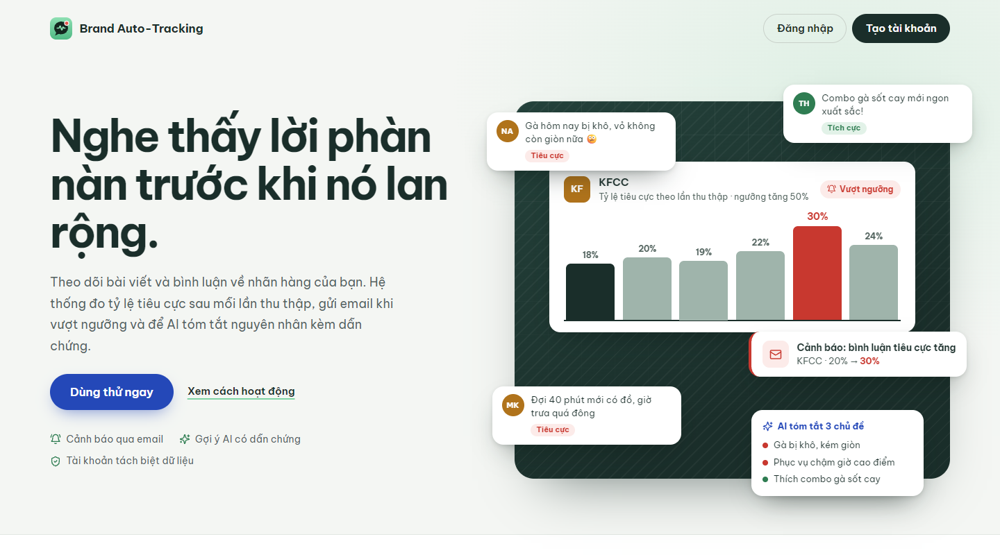
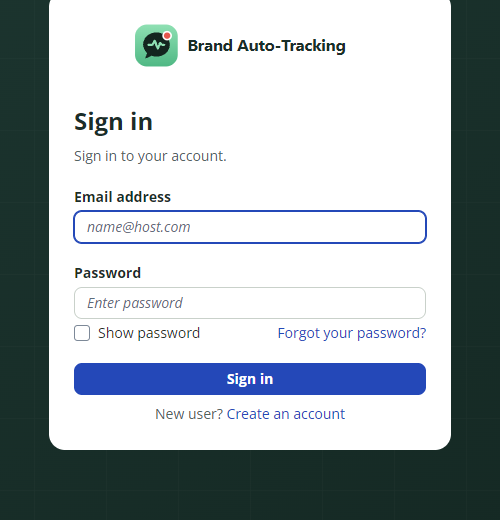
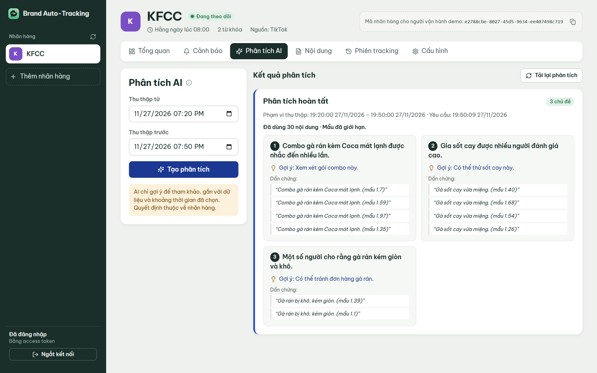
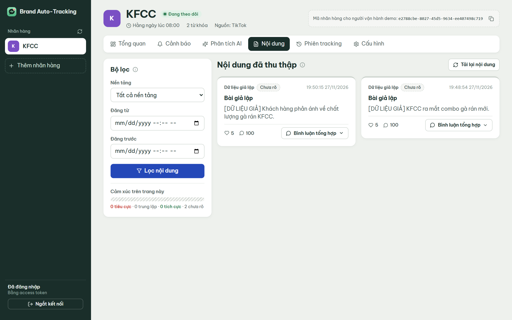

| Giảng viên hướng dẫn: TS. Nguyễn Ngọc Tân | ||
| Nhóm 6 | ||
|---|---|---|
| 1 | Trần Hoàng Long (nhóm trưởng) | 24022813 |
| 2 | Đỗ Anh Khoa | 24022805 |
| 3 | Nguyễn Quang Huy | 24022803 |
| 4 | Nguyễn Hoàng Long | 24022811 |
| 5 | Nguyễn Tiến Nam | 24022819 |
Mạng xã hội như TikTok, Facebook hay Threads đã trở thành nơi khách hàng chia sẻ trải nghiệm về sản phẩm, dịch vụ và thương hiệu. Một video phàn nàn về chất lượng món ăn hay thời gian giao hàng có thể lan rộng chỉ trong vài giờ và ảnh hưởng trực tiếp đến uy tín của doanh nghiệp. Ngược lại, những phản hồi tích cực cũng là nguồn thông tin quý để doanh nghiệp biết điều gì đang làm tốt.
Với doanh nghiệp vừa và nhỏ, việc theo dõi thủ công các bình luận này tốn nhiều thời gian, dễ bỏ sót và thường chỉ phát hiện khủng hoảng khi đã quá muộn. Các công cụ "social listening" thương mại có giá cao và khó tùy biến theo nhu cầu riêng.
Bài toán đặt ra là xây dựng một hệ thống trên nền tảng điện toán đám mây giúp doanh nghiệp:
Theo hướng dẫn của học phần, nhóm đóng vai một công ty tư vấn và triển khai ứng dụng lên Cloud. Quy trình thực hiện bám sát các bước:
Các chương tiếp theo trình bày lần lượt theo đúng quy trình này. Trong báo cáo, thương hiệu được dùng làm ví dụ là KFCC, một chuỗi gà rán hư cấu (gà rán, burger, Coca).
Khách hàng là một doanh nghiệp kinh doanh đồ ăn nhanh, đưa ra các yêu cầu ban đầu như sau:
Sau các buổi trao đổi, nhóm chuyển các yêu cầu trên thành bản đặc tả yêu cầu phần mềm (SRS) gồm 30 yêu cầu chức năng (FR-01 đến FR-30) và 8 yêu cầu phi chức năng (NFR-01 đến NFR-08), tóm tắt ở các mục dưới đây.
| Đối tượng | Vai trò |
|---|---|
| Khách hàng (doanh nghiệp) | Tạo tài khoản, quản lý nhãn hàng, cấu hình theo dõi, xem dữ liệu, đặt quy tắc và nhận cảnh báo, yêu cầu AI phân tích. |
| Quản trị viên | Theo dõi hoạt động hệ thống, xử lý sự cố vận hành (qua CloudWatch). |
| Hệ thống bên ngoài | Nền tảng mạng xã hội (TikTok) qua Firecrawl; dịch vụ AI (Amazon Bedrock). |
Quy trình nghiệp vụ chính: (1) khách hàng đăng ký, đăng nhập; (2) tạo nhãn hàng; (3) khai báo từ khóa, nền tảng, tần suất và số bài cần thu thập; (4) đến lịch, hệ thống tìm kiếm, chọn bài nổi bật, thu thập bài và bình luận rồi lưu thành một phiên tracking; (5) khách hàng xem kết quả theo phiên hoặc tổng hợp; (6) hệ thống theo dõi xu hướng tiêu cực và cảnh báo khi vượt ngưỡng; (7) khách hàng yêu cầu AI phân tích và đề xuất.
| Nhóm | Mã | Nội dung chính |
|---|---|---|
| Tài khoản và truy cập | FR-01–02 | Đăng ký, đăng nhập, đăng xuất; mỗi khách hàng chỉ thấy dữ liệu của mình. |
| Quản lý nhãn hàng | FR-03–09 | Tạo, sửa, xóa nhãn hàng; nhiều từ khóa; chọn nền tảng; đặt tần suất, số bài mỗi lượt; bật/tạm dừng theo dõi; kiểm tra dữ liệu nhập. |
| Thu thập và lưu dữ liệu | FR-10–16 | Chạy phiên tracking theo lịch; chọn bài nổi bật; lưu nội dung, tương tác, bình luận; hạn chế lưu trùng; ghi nhận lỗi mà vẫn giữ dữ liệu đã thu được. |
| Xem nội dung | FR-17–21 | Lịch sử phiên; xem bài và bình luận theo phiên hoặc tổng hợp; lọc theo thời gian, nền tảng. |
| Cảnh báo tiêu cực | FR-22–26 | Phân tích cảm xúc; quy tắc cảnh báo theo ngưỡng; tạo và lưu lịch sử cảnh báo; chống cảnh báo lặp; gửi email. |
| Phân tích AI | FR-27–30 | Phân tích theo khoảng thời gian; tổng hợp vấn đề nổi bật và gợi ý; nêu rõ phạm vi dữ liệu; báo rõ khi không đủ căn cứ. |
| Yêu cầu | Nội dung |
|---|---|
| NFR-01 Cloud | Triển khai và vận hành trên public cloud (nhóm chọn AWS). |
| NFR-02 Bảo mật | Bảo vệ tài khoản và dữ liệu; không đưa mật khẩu, khóa API vào mã nguồn hay log; mã hóa đường truyền. |
| NFR-03 Quyền riêng tư, nguồn dữ liệu | Chỉ thu thập dữ liệu được phép truy cập, chỉ lưu dữ liệu cần thiết. |
| NFR-04 Độ tin cậy | Ghi nhận lỗi, trạng thái; thử lại tác vụ thất bại phù hợp giới hạn nguồn. |
| NFR-05 Khả năng mở rộng | Dễ bổ sung nền tảng hoặc thay dịch vụ AI mà ít ảnh hưởng phần khác. |
| NFR-06 Dễ sử dụng | Giao diện thể hiện rõ trạng thái, dữ liệu rỗng và dữ liệu không khả dụng. |
| NFR-07 Hiệu năng và chi phí | Đáp ứng quy mô bài tập, trong ngân sách 30 USD. |
| NFR-08 Chất lượng phân tích | Kết quả AI là ước lượng; thể hiện phạm vi dữ liệu để khách hàng tự đánh giá. |
Dự án được chia thành 9 giai đoạn, mỗi giai đoạn có tiêu chí nghiệm thu và tài liệu bàn giao riêng:
| GĐ | Nội dung | Kết quả chính |
|---|---|---|
| S0 | Chuẩn bị môi trường | Tài khoản AWS, SSO, ngân sách và cảnh báo chi phí, kho mã nguồn. |
| S1 | Phạm vi và giao diện | Giao diện React chia tab, chế độ minh họa và chế độ kết nối backend. |
| S2 | Kiểm chứng Firecrawl | Thử tìm kiếm video TikTok theo từ khóa và lấy bình luận; chọn luồng thu thập phù hợp. |
| S3 | Backend và cơ sở dữ liệu | FastAPI, PostgreSQL, 22 bản migration có kiểm thử. |
| S4 | Tài khoản, nhãn hàng | Cognito với đăng ký bằng email thật và mã xác minh, cách ly dữ liệu theo tài khoản, quản lý nhãn hàng. |
| S5 | Tracking | Lập lịch, nút "Thu thập ngay", hàng đợi, worker, chống trùng, phục hồi khi lỗi. |
| S6 | Cảm xúc, cảnh báo | Phân loại cảm xúc bằng Bedrock, quy tắc ngưỡng, lịch sử cảnh báo, email. |
| S7 | Phân tích AI | Tóm tắt, gợi ý có dẫn chứng được kiểm chứng. |
| S8 | Triển khai AWS, kiểm thử, bàn giao | Hạ tầng bằng CloudFormation, diễn tập demo, tài liệu bàn giao. |
Hệ thống gồm hai luồng chính gặp nhau ở cơ sở dữ liệu: luồng người dùng (giao diện web và API, luôn sẵn sàng) và luồng xử lý nền (thu thập, phân tích, cảnh báo, chạy theo lịch). Toàn bộ triển khai tại Region ap-southeast-1 (Singapore).
Hình 3.1a. Luồng người dùng: truy cập, đăng nhập và API. Hai máy EC2 thuộc một Auto Scaling Group trải trên hai Availability Zone.
Hình 3.1b. Luồng xử lý nền. "Lambda lập lịch" và "Lambda worker" là cùng một hàm Lambda chạy ở hai vai trò. VPC, IAM, Secrets Manager, CloudWatch và CloudFormation bao quanh toàn bộ hệ thống.
Luồng hoạt động được mô tả theo hành trình sử dụng thực tế, các bước đánh số liên tục từ ① đến ⑬.
Hình 3.2. Luồng hoạt động theo ba giai đoạn: đăng ký theo dõi, tự động theo dõi, xem kết quả.
Bộ hẹn giờ kiểm tra mỗi phút, nhưng mỗi nhãn hàng chỉ được thu thập đúng lịch người dùng đặt (ví dụ hằng ngày lúc 08:00). Thiết kế một bộ hẹn giờ chung giúp hệ thống phục vụ nhiều nhãn hàng với lịch khác nhau mà không phải tạo lịch riêng cho từng nhãn hàng, và không nhãn hàng nào bị trễ quá một phút.
| # | Dịch vụ | Chương trình học | Vai trò và lý do lựa chọn |
|---|---|---|---|
| 1 | CloudFront | Có | Cổng HTTPS duy nhất; phân phối giao diện từ S3 và chuyển /api/* tới ALB, nhờ đó web và API dùng chung một tên miền, tránh lỗi CORS. |
| 2 | S3 | Có | Lưu giao diện web tĩnh (React); bucket riêng tư, chỉ CloudFront đọc được (Origin Access Control). |
| 3 | Cognito | Ngoài | Đăng ký bằng email thật kèm mã xác minh gửi qua email, đăng nhập theo chuẩn OAuth 2.0 (PKCE), cấp JWT; nhóm không phải tự quản lý mật khẩu. |
| 4 | Elastic Load Balancing (ALB) | Có | Chia tải cho các máy API, kiểm tra sức khỏe qua /health, chỉ gửi yêu cầu tới máy khỏe. |
| 5 | EC2 | Có | Chạy API FastAPI (t3.micro, Amazon Linux 2023, Python 3.12); API cần luôn sẵn sàng nên đặt trên máy chủ thường trực. |
| 6 | Auto Scaling | Có | Giữ tối thiểu 2 máy ở 2 AZ, tối đa 3; tự thay máy hỏng; mở rộng khi CPU trung bình vượt 50%; cập nhật cuốn chiếu không gián đoạn. |
| 7 | RDS PostgreSQL | Có | Dữ liệu có quan hệ (tài khoản – nhãn hàng – phiên – bài – bình luận); AWS quản lý sao lưu tự động hằng ngày, snapshot khi xóa; không mở ra Internet. |
| 8 | EventBridge | Ngoài | Bộ hẹn giờ kích hoạt việc lập lịch mỗi phút. |
| 9 | SQS (kèm DLQ) | Ngoài | Hàng đợi tách "nhận việc" và "làm việc": chống quá tải, tự thử lại, phiên lỗi 5 lần chuyển sang DLQ để kiểm tra. |
| 10 | Lambda | Có | Lập lịch và worker thu thập; chỉ chạy khi có việc, tính tiền theo thời gian chạy, phù hợp tác vụ ngắn, định kỳ. |
| 11 | Bedrock | Ngoài | Mô hình Amazon Nova Lite phân loại cảm xúc, tóm tắt và gợi ý; không cần tự huấn luyện mô hình. |
| 12 | SES | Ngoài | Gửi email cảnh báo tới danh sách người nhận của từng nhãn hàng. |
| 13 | VPC | Có | Mạng riêng chia subnet công khai và riêng tư; Security Group chỉ cho EC2 nhận kết nối từ ALB, database chỉ nhận từ ứng dụng. |
| 14 | IAM | Có | Mỗi thành phần chỉ có đúng quyền cần dùng (ví dụ worker chỉ được đọc hàng đợi, gọi Bedrock, gửi email từ địa chỉ đã cấu hình). |
| 15 | Secrets Manager | Ngoài | Giữ mật khẩu database và khóa Firecrawl, không đưa vào mã nguồn. |
| 16 | CloudWatch | Có | Log API và worker, metric filter, alarm cho lỗi phiên, lỗi Lambda và DLQ. |
| 17 | CloudFormation | Ngoài | Toàn bộ hạ tầng viết thành template YAML; dựng lại hoặc xóa sạch môi trường bằng một lệnh. |
Nhận xét: hệ thống sử dụng đủ các nhóm dịch vụ của học phần (bảo mật, mạng và phân phối nội dung, tính toán, lưu trữ, cơ sở dữ liệu, tự động mở rộng và giám sát), đồng thời dùng thêm 7 dịch vụ AWS ngoài chương trình (Cognito, EventBridge, SQS, Bedrock, SES, Secrets Manager, CloudFormation) để giải quyết các vấn đề xác thực, xử lý bất đồng bộ, AI, thông báo và hạ tầng dưới dạng mã. Firecrawl là dịch vụ bên ngoài AWS.
C1…C30 rồi gửi cho mô hình. Nội dung nguồn được coi là dữ liệu không đáng tin: mô hình được yêu cầu không làm theo chỉ dẫn bên trong (chống prompt injection).example.com); API tự xác minh chữ ký JWT; mọi truy vấn lọc theo chủ sở hữu, tài khoản khác nhận lỗi 404.API chạy trên ít nhất hai máy EC2 ở hai Availability Zone sau ALB. Khi một máy gặp sự cố, ALB ngừng gửi yêu cầu tới máy đó và Auto Scaling tự tạo máy thay thế. Khi cập nhật phiên bản mới, Auto Scaling thay lần lượt từng máy (luôn giữ ít nhất 1 máy phục vụ). Luồng xử lý nền dùng Lambda và SQS nên tự co giãn theo số phiên.
Chỉ bật tài nguyên khi làm việc và xóa stack sau khi dùng; Lambda tính theo lượt; số lời gọi Bedrock và credit Firecrawl có hạn mức trong database; AWS Budgets 30 USD/tháng cảnh báo khi chi phí tăng.
| Thành phần | Công nghệ |
|---|---|
| Giao diện | React 18, TypeScript, Vite; đăng nhập Cognito (PKCE) |
| API | Python 3.12, FastAPI, Uvicorn, SQLAlchemy |
| Cơ sở dữ liệu | PostgreSQL (RDS, db.t4g.micro), Alembic (22 bản migration) |
| Xử lý nền | AWS Lambda (Python 3.12), SQS, EventBridge |
| AI | Amazon Bedrock – Amazon Nova Lite (inference profile APAC) |
| Hạ tầng | AWS CloudFormation (YAML), AWS CLI, boto3 |
Hạ tầng được chia thành các stack CloudFormation độc lập, dựng theo thứ tự phụ thuộc:
| Template | Tài nguyên |
|---|---|
aws-demo-data.yaml | VPC, 2 subnet công khai, 2 subnet riêng, NAT, RDS PostgreSQL, Secrets Manager, chính sách sao lưu. |
cognito-demo.yaml | User pool, client, domain đăng nhập có giao diện thương hiệu; xác minh email bằng mã gửi qua email; trigger kiểm tra email khi đăng ký. |
aws-dev-api.yaml | Lambda (lập lịch, worker, migration), SQS và DLQ, EventBridge rule, IAM, CloudWatch alarm, quyền gửi email SES. |
aws-demo-ec2-api.yaml | Launch template, Auto Scaling Group (2 AZ), ALB, Target Group, chính sách mở rộng theo CPU, log CloudWatch. |
aws-demo-frontend.yaml | S3 riêng tư, CloudFront (OAC), CloudFront Function cho định tuyến SPA, hành vi /api/*. |
Quy trình phát hành một phiên bản: (1) chạy kiểm thử; (2) đóng gói backend thành một gói ZIP dùng chung cho Lambda và EC2, tải lên S3; (3) cập nhật stack API (Lambda nhận mã mới), chạy Lambda migration; (4) cập nhật stack EC2 với khóa gói mới, Auto Scaling thay lần lượt từng máy; (5) build giao diện, đồng bộ lên S3 và làm mới cache CloudFront. Trong ngày 27/11/2026, quy trình này được thực hiện nhiều lần mà web không bị gián đoạn.
| Loại | Kết quả |
|---|---|
| Backend (unittest) | 139/139 kiểm thử đạt trên PostgreSQL 18 riêng, không bỏ qua kiểm thử nào; migration đến bản 22 và alembic check sạch. Bao gồm kiểm thử đồng thời (hai bộ lập lịch, hai worker), cách ly tài khoản, chống trùng, cảnh báo không lặp, kiểm chứng dẫn chứng AI. |
| Frontend | Build đạt; 18 kiểm thử đơn vị đạt (1 kiểm thử tích hợp bỏ qua do cần môi trường riêng). |
| Trình duyệt (Playwright + Chrome) | Kịch bản cục bộ với backend xác thực giả và PostgreSQL tạm: tạo nhãn hàng, đặt quy tắc, hai đợt dữ liệu, cảnh báo 20% → 30%, đánh giá lại không trùng, phân tích AI gọi Bedrock thật. |
| Ngày | Nội dung | Kết quả |
|---|---|---|
| 23/11/2026 | Thu thập dữ liệu thật | Chrome, Cognito, API, worker, Firecrawl, RDS: chạy thủ công thu được 1 bài và 16 bình luận; chạy theo lịch thu được 1 bài và 15 bình luận. Nhãn hàng tạm dừng không tạo phiên. (API thời điểm này chạy trên API Gateway + Lambda.) |
| 23/11/2026 | Chống trùng với dữ liệu thật | Hai phản hồi Firecrawl cùng một video có 20 bình luận trùng; database giữ một bản cho mỗi bình luận, liên kết riêng với hai phiên. |
| 23/11/2026 | Lịch, hàng đợi, phục hồi | Lịch → outbox → SQS → worker đạt; phát lại không chạy trùng; lease hết hạn giả lập tạo phiên phục hồi thành công. |
| 23/11/2026 | Cách ly tài khoản, AI | Hai tài khoản không đọc được dữ liệu của nhau; Bedrock trả phân tích có dẫn chứng. |
| 23/11/2026 | Phân loại cảm xúc | Tập 30 câu tiếng Việt giả: đúng 29/30 với Nova Lite. |
| 27/11/2026 | Kịch bản demo trên AWS | Đăng ký qua CloudFront và Cognito, dữ liệu giả theo phút, cảnh báo 20% → 30%, AI, liên kết mở cảnh báo: đạt. |
| 27/11/2026 | Chịu lỗi EC2 | Tắt một máy EC2 khi đang chạy: web không gián đoạn, Auto Scaling tự tạo máy thay thế. |
| 27/11/2026 | Email SES | Địa chỉ gửi đã xác minh; email thử qua SES đến hộp thư thành công. |
| 27/11/2026 | Phân tích AI bản sửa lỗi | Gọi Nova Lite thật 3/3 lần thành công, kết quả tiếng Việt, dẫn chứng đúng nội dung tương ứng. |
| 28/11/2026 | Đăng ký bằng email thật | Đăng ký trên web, nhận mã xác minh qua email, đăng nhập thành công; email thử nghiệm dạng @example.com bị từ chối. |
| 28/11/2026 | Thu thập thật song song với demo | Cùng một tài khoản theo dõi NVIDIA (thu thập thật qua Firecrawl bằng nút "Thu thập ngay": 1 bài, 34 bình luận được Bedrock gắn nhãn cảm xúc) và KFCC (dữ liệu mô phỏng); bấm vào bình luận mở đúng bài TikTok gốc. |
| 28/11/2026 | Cảnh báo và email | Tỷ lệ tiêu cực tăng 20% → 30% tạo cảnh báo trên web và gửi email qua SES tới người nhận của nhãn hàng. |
Để buổi trình diễn ổn định, nhóm xây dựng chế độ dữ liệu giả lập cho thương hiệu hư cấu KFCC. Lệnh điều khiển demo_control.py bật lịch trên AWS và xếp đợt đầu tiên ngay lập tức; mỗi lượt gồm 2 đợt cách nhau khoảng 1 phút, mỗi đợt 1 bài và 100 bình luận có nhãn cảm xúc gán sẵn:
| Đợt | Bài viết giả | Tiêu cực / tổng (cộng dồn) | Kết quả |
|---|---|---|---|
| 1 | KFCC ra mắt combo gà rán mới | 20 / 100 = 20% | Mốc, chưa cảnh báo |
| 2 (sau khoảng 1 phút) | Khách hàng phản ánh về chất lượng gà rán KFCC | 60 / 200 = 30% | Tăng 50%: cảnh báo trên web và email |
Dữ liệu giả chỉ thay nguồn thu thập (không gọi Firecrawl); đăng nhập, lưu trữ, lập lịch, hàng đợi, worker, cảnh báo, email và AI đều chạy thật trên AWS. Mọi nội dung giả được gắn nhãn "[DỮ LIỆU GIẢ]" để không nhầm với dữ liệu thật. Song song, nhãn hàng thật NVIDIA trong cùng tài khoản được thu thập từ TikTok qua Firecrawl để minh họa luồng thu thập thật.
| # | Tiêu chí (SRS mục 8) | Đánh giá | Căn cứ |
|---|---|---|---|
| 1 | Đăng ký, đăng nhập, tạo nhiều nhãn hàng; dữ liệu các tài khoản tách biệt | Đạt | Cognito; kiểm thử cách ly trên AWS và tự động. |
| 2 | Cấu hình nhiều từ khóa, nền tảng, tần suất, giới hạn bài; tạm dừng theo dõi | Đạt | Giao diện và API; nhãn hàng tạm dừng không tạo phiên. |
| 3 | Tracking theo lịch với nguồn được phép, lưu trạng thái và dữ liệu | Đạt | Thu thập thật qua Firecrawl theo lịch (23/11) và bằng "Thu thập ngay" cho NVIDIA (28/11). |
| 4 | Xem kết quả từng phiên và tổng hợp; thể hiện dữ liệu thiếu | Đạt | Tab Nội dung, Phiên tracking; bộ lọc thời gian, nền tảng. |
| 5 | Tạo cảnh báo khi dữ liệu thỏa quy tắc, xem lịch sử | Đạt | Kịch bản 20% → 30%; chống lặp; email SES. |
| 6 | Phân tích AI theo nhãn hàng và thời gian, nêu phạm vi, báo rõ khi không thể phân tích | Đạt | Phân tích theo khoảng thời gian, dẫn chứng được kiểm chứng thuộc đúng dữ liệu đầu vào; ghi rõ "chỉ để tham khảo". |




Phần thu thập được tách thành adapter riêng cho từng nguồn, nên có thể mở rộng mà không phải thay đổi hạ tầng, hàng đợi hay phần phân tích:
Theo vai trò công ty tư vấn, nhóm bàn giao cho khách hàng các thành phần sau:
| Hạng mục | Nội dung |
|---|---|
| Mã nguồn | backend/ (API, worker, migration, kiểm thử), frontend/ (giao diện React), infrastructure/ (template CloudFormation), scripts/ (công cụ đóng gói, thử Firecrawl). |
| Tài liệu yêu cầu và thiết kế | Đặc tả yêu cầu (SRS), kiến trúc AWS, lộ trình, cấu trúc dự án trong docs/. |
| Hồ sơ giai đoạn | Hiện trạng, bằng chứng kiểm thử và hướng dẫn bàn giao của từng giai đoạn S0–S8 trong docs/development-process/. |
| Hướng dẫn vận hành | Cách dựng, cập nhật và dọn môi trường (infrastructure/README.md); cách chạy backend, frontend. |
| Bộ demo | Thư mục demo/: kiến trúc và dịch vụ, lời thoại, thao tác từng bước, công cụ demo_control.py. |
Hệ thống demo được truy cập tại https://d1ymt5wg42h5sa.cloudfront.net trong thời gian môi trường còn được bật.